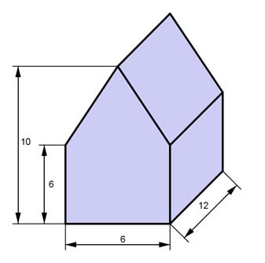

Aufgabe 78 Ein Geschenkkarton aus Pappe hat die dargestellte Form eines Hauses. Wie viel Pappe braucht man für ein Haus, wenn 18% Abfall entstehen? Alle Maße in cm.  Gesucht ist die Oberfläche: Flächen mit der Höhe 6 cm: (2 * 6 cm + 2 * 12 cm) * 6 cm = 36 cm * 6 cm = 216 cm² Grundfläche G = 6 cm * 12 cm = 72 cm² Giebelhöhe h = (10 cm - 6 cm) = 4 cm h * 6 cm Giebelfläche = 2 * ------------- = 4 cm * 6 cm = 24 cm² 2 Satz von Pythagoras im Dreieck ABC: AB = 6 cm/2 =3 cm s² = h² + AB² s² = 4² + 3² = 25 |√ s = 5 cm Dachfläche = 2 * s * 12 cm = 2 * 5 cm * 12 cm = 120 cm² O = 216 cm² + 72 cm² + 24 cm² + 120 cm² = 432 cm² Bedarf B an Pappe: B = O * 1,18 = 432 cm² * 1,18 = 509,8 cm²